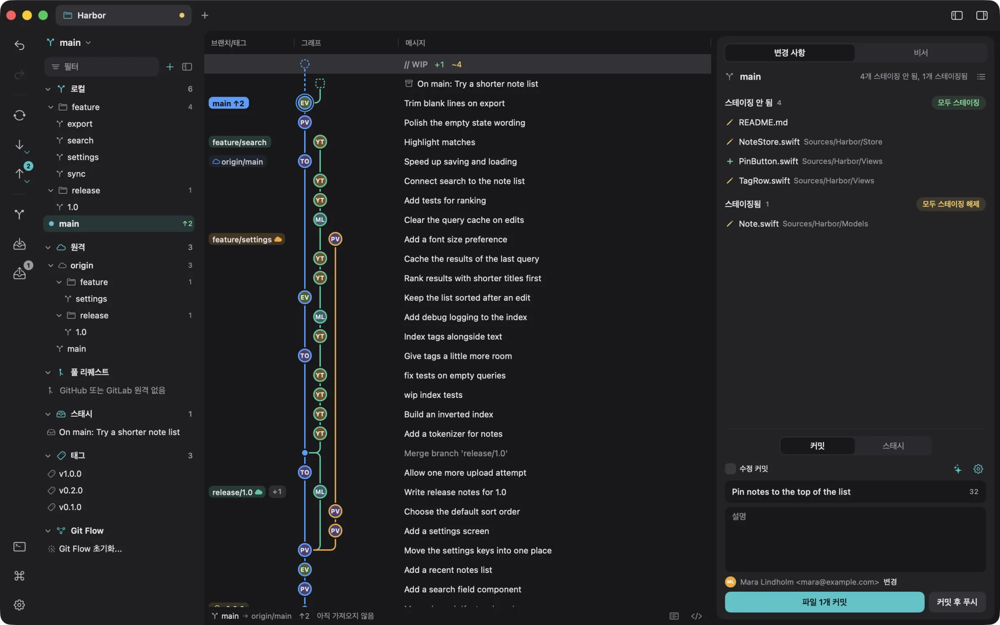

계정도 서버도 없는 Mac Git 클라이언트
Branchlane을 만들며 정한 원칙, App Sandbox와 씨름한 이야기, 에이전트 Lane의 설계입니다.
Mac에서 쓰는 Git 클라이언트를 직접 만들었습니다. 이름은 Branchlane이고, 2026년 6월에 첫 커밋을 남긴 뒤 지금은 Mac App Store에서 2.2.0까지 나와 있습니다.
계정도, 클라우드도, Branchlane 서버도 없습니다. Git은 내 Mac에서 끝납니다.
이 글에서는 Branchlane을 만들며 정한 원칙, App Store 샌드박스 안에서 Git 클라이언트를 만들며 부딪힌 일, 그리고 2.2에서 더한 "여러 AI 코딩 에이전트의 작업을 한 화면에서 검토하는" 에이전트 Lane을 정리합니다.
원칙: Mac에 있는 git을 그대로 부른다#
Branchlane은 Git을 다시 구현하지 않습니다. Mac에 이미 있는 Xcode Command Line Tools의 git을 그대로 실행하고, 결과를 SwiftUI 화면으로 보여 줍니다. 그래서 내 저장소가 Branchlane 때문에 다른 형식으로 바뀌는 일이 없고, 앱을 지워도 평범한 Git 저장소가 그대로 남습니다.
데이터가 Mac 밖으로 나가는 경우는 사용자가 요청했을 때뿐이고, 가는 곳도 사용자가 고른 곳뿐입니다.
| 나가는 곳 | 언제 |
|---|---|
| 내 Git 원격 | clone, fetch, pull, push 할 때 |
| GitHub, GitLab | 내 토큰을 넣었을 때만 |
| 내가 설정한 AI 제공자 | AI 기능을 실행하거나 비서에게 물을 때만. 로컬 모델과 Apple 온디바이스 모델은 Mac 안에 머뭅니다 |
| Gravatar | 커밋 작성자 프로필 사진을 찾을 때 이메일의 해시만. 끌 수 있습니다 |
| Branchlane 서버 | 없습니다. 계정, 클라우드 동기화, 분석 서버도 없습니다 |
구독도 App Store의 StoreKit으로만 처리합니다. 라이선스 서버나 별도 결제 페이지가 없습니다.
매일 쓰는 Git부터#
Git 클라이언트는 결국 매일 여는 도구라서, 화려한 기능보다 매일 하는 일을 덜 불편하게 만드는 데 시간을 가장 많이 썼습니다.

브랜치가 곧게 이어지는 커밋 그래프
- 커밋 그래프: 브랜치가 곧게 이어지도록 레인을 배치하고, 브랜치와 태그를 알약 모양으로 보여 줍니다. 브랜치를 숨기거나 하나만 볼 수 있고, ref 하나를 다른 ref 위로 끌어다 놓으면 병합이나 리베이스를 합니다.
- 파일, 헝크, 줄 단위 스테이징: 고른 줄을 인덱스에 바이트 그대로 씁니다. 그래서 CRLF 줄 끝이나 UTF-8이 아닌 파일도 스테이징하다 깨지지 않습니다.
- 실행 취소와 다시 실행: 체크아웃, 커밋, 리셋, 버리기, 브랜치 삭제, 스태시 삭제, 리베이스를 되돌립니다. 되돌리기 기록은 앱 안이 아니라 Git 안(
refs/worktree/branchlane/undo와 reflog)에 남깁니다. 앱을 껐다 켜도 기록이 남아 있습니다. - Diff: 헝크, 인라인, 좌우 분할, 전체 내용 보기에 단어 단위 변경과 문법 강조를 넣었고, 이미지 비교와 파일 기록, blame도 있습니다.

단어 단위 변경까지 보이는 diff
여기까지는 모두 무료입니다. 기간 제한도 없고, 저장소 탭은 3개까지 열 수 있습니다.
App Sandbox 안에서 Git 클라이언트 만들기#
Branchlane은 Mac App Store로만 냅니다. App Store 앱은 App Sandbox 안에서 돌아야 하고, Git 클라이언트에게 샌드박스는 꽤 까다로운 환경입니다. 겪은 제약을 숨기지 않고 정리하면 이렇습니다.
- 샌드박스 앱이 쓴 파일은 격리 표시가 붙습니다. macOS는 샌드박스 프로세스가 쓴 파일에
com.apple.quarantine을 붙이고, 격리된 프로그램은 실행하지 않습니다. 그래서 Branchlane으로 clone, pull, checkout 해서 받은 스크립트나 Git 훅은 터미널에서도 "operation not permitted"로 막힙니다. 이미 디스크에 있던 훅은 그대로 돕니다. 막혔을 때는xattr -dr com.apple.quarantine <저장소>를 한 번 실행하면 되고, Branchlane이 이 명령을 화면에 보여 줍니다. ~/.gitconfig와~/.ssh는 처음 한 번 허락을 받아야 읽습니다.ssh-agent에 올린 키는 허락 없이 쓰고, SSH 호스트 키는 앱 전용 known hosts 파일에 둡니다.- 저장소 밖 worktree는 폴더 접근을 따로 받습니다. 열기 패널로 한 번 고르면 보안 범위 북마크로 다음 실행에도 기억합니다.
- 내장 터미널은 없습니다. Git 콘솔은 Git 명령만 실행하고, "터미널에서 열기"로 터미널 앱에 넘깁니다.
샌드박스 없는 직접 배포판을 따로 내면 이런 제약이 사라지지만, Branchlane은 App Store판 하나만 내기로 했습니다. 대신 제약에 걸리는 순간 앱 안에서 바로 이유를 알려 주고, 우회가 필요한 곳은 실행할 명령을 그대로 보여 줍니다.
에이전트 시대의 Git 클라이언트#
요즘은 Claude Code나 Codex 같은 코딩 에이전트에게 일을 맡기는 시간이 늘었습니다. 그러다 보니 Git 클라이언트에서 보고 싶은 것도 달라졌습니다.
먼저 실제로 Git이 에이전트를 느리게 하는지 확인해 봤습니다. 제 개인 프로젝트의 에이전트 세션 34개를 내용은 읽지 않고 횟수만 셌습니다.
| 항목 | 값 |
|---|---|
| 셸 명령 호출 | 4,015회 |
| 그중 Git을 쓴 호출 | 583회 (14.5%) |
| Git 호출 중 실패 | 25회 (4.3%) |
| 많이 쓴 명령 | log 281, status 192, commit 143, add 138 |
| Git 출력의 양 | 도구 결과 전체 글자의 9.4% |
Git이 일을 막는 경우는 드물었습니다. 비용은 다른 곳에 있었습니다. 에이전트는 세션마다 log와 status를 반복해서 읽으며 "지금 어디에 있고, 다른 작업과 부딪히는지"를 다시 파악합니다. 원인을 알 수 있는 실패 18건 중 12건은 index.lock이나 "브랜치가 다른 worktree에 이미 체크아웃됨"처럼 작업 공간마다 하나뿐인 자원에서 생겼습니다.
결론은 새 버전 관리 시스템을 만드는 것이 아니라, Git 위에 에이전트 작업을 다루는 층을 얹는 것이었습니다. 쓰는 비용은 거의 0이 되었고, 남은 비용은 검증하고, 통합하고, 되돌리는 데 있습니다.
Lane: 에이전트에게 맡긴 일 하나#
Branchlane 2.2의 에이전트 Lane은 에이전트에게 맡긴 일 하나를 브랜치 하나와 작업 폴더(worktree) 하나로 묶습니다.
- Lane 시작
브랜치와 작업 폴더(worktree)를 만듭니다. - 에이전트 작업
체크포인트를 남깁니다. - 증거 기록
테스트 결과를 남깁니다. - 검토 요청
- 사람이 검토
파일과 헝크 단위로 받거나, 2번으로 돌려보냅니다. - 통합 대기열
대상 브랜치에 들어가고, 필요하면 Lane을 통째로 되돌립니다.
에이전트는 이 Mac 안에서만 접속할 수 있는 MCP 서버(127.0.0.1, 토큰 필요)로 Branchlane에 연결해 Lane을 열고, 체크포인트를 남기고, 테스트 결과를 증거로 남기고, 검토를 요청합니다. Branchlane이 에이전트를 직접 돌리지는 않습니다. 에이전트는 각자의 터미널이나 앱에서 돌고, Branchlane은 그 옆에서 기록하고 조율하는 자리를 맡습니다.

여러 에이전트의 Lane을 한 화면에서 검토
설계하며 가장 중요하게 본 원칙 몇 가지입니다.
- 증거는 브랜치가 아니라 트리에 묶습니다. "테스트 통과"는 정확히 그 내용에서만 참입니다. 증거에 트리 OID를 적어 두면, 에이전트가 테스트 뒤에 한 줄이라도 고쳤을 때 "통과(이후 3개 파일 바뀜)"처럼 낡은 증거로 표시할 수 있습니다.
- 잠그지 말고 미리 알립니다. Lane끼리, Lane과 대상 브랜치 사이를
merge-tree로 계속 시험 병합해서, "이 Lane 10-12줄과 상대 11줄이 부딪힌다"는 것과 어느 쪽을 먼저 통합하면 덜 아픈지를 커밋 전에 보여 줍니다. 같은 내용을 에이전트도 읽습니다. - 일부만 받습니다. 파일이나 헝크를 빼고 이유를 적어 돌려보내면, 에이전트가 자기 도구로 그 이유를 읽고 다시 작업합니다.
- Lane 단위로 되돌립니다. 통합한 Lane 하나를 커밋 하나로 되돌립니다. 그 뒤에 쌓인 다른 작업은 지우지 않습니다.
- 모든 기록은 Git 안에 둡니다. Lane 상태는
refs/branchlane/*에, AI가 쓴 줄의 출처는 공개 명세인 Agent Trace 형식으로 git notes에 남깁니다. Branchlane을 지워도 저장소에 기록이 남고, 팀원과 주고받을 수도 있습니다.
저장소의 .branchlane/policy.json에 보호할 브랜치와 경로, 승인이 필요한 동작, 통합 전에 꼭 있어야 하는 증거를 적어 두면 그 규칙도 따릅니다.
에이전트가 만든 커밋과 AI가 쓴 줄은 커밋 그래프와 blame에 표시되는데, 이 표시는 무료입니다. 다른 도구가 남긴 Agent Trace 기록도 그대로 읽어 보여 줍니다.
무료와 Pro#
| Free | Pro | |
|---|---|---|
| 커밋 그래프, 스테이징, 커밋, 브랜치, 병합, 일반 리베이스 | O | O |
| 원격 동기화, 실행 취소, 파일 기록, blame | O | O |
| 에이전트 커밋과 AI가 쓴 줄 표시 | O | O |
| 저장소 탭 | 3개 | 제한 없음 |
| 에이전트 Lane, 인터랙티브 리베이스, 3방향 충돌 편집기 | O | |
| 비서와 MCP 서버, AI 커밋 메시지와 설명 | O | |
| 비교, worktree, Git Flow, 패치, PR과 이슈 | O |
Pro는 월간 또는 연간 구독이고, 대상 신규 구독자는 14일 무료 체험을 쓸 수 있습니다. 체험은 앱을 받는 것만으로 시작되지 않고, 앱 안에서 직접 확인했을 때만 시작됩니다. 자세한 가격은 가격 페이지에 있습니다.
받기#
- Mac App Store: https://apps.apple.com/app/id6785129372
- 소개 페이지: ../../../ko/
- 요구 사항: macOS 14 Sonoma 이상, Apple 실리콘과 Intel Mac 모두 지원
혼자 만들고 있어서 실제로 써 보신 분들의 이야기가 가장 큰 도움이 됩니다. 불편한 점이나 원하는 기능이 있으면 지원 페이지에 남겨 주세요.